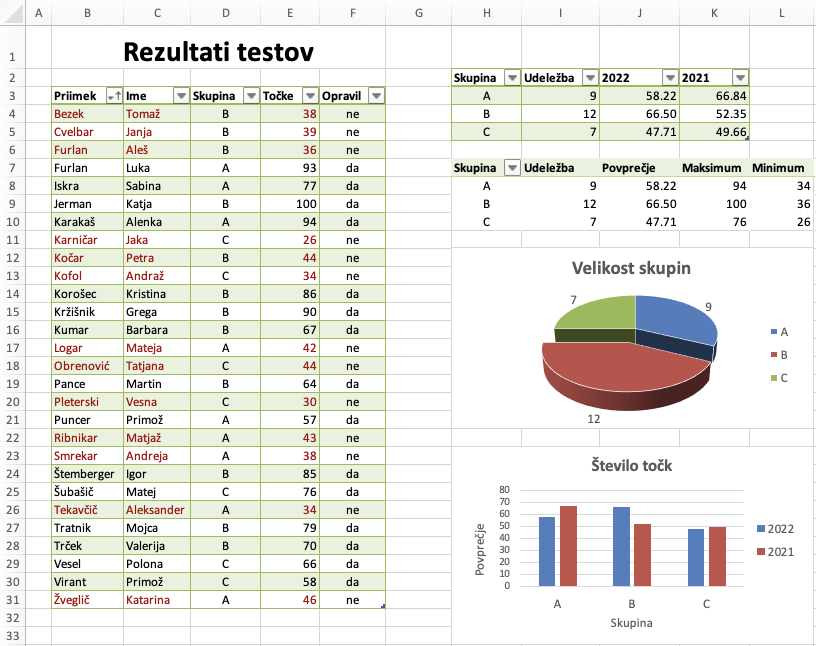
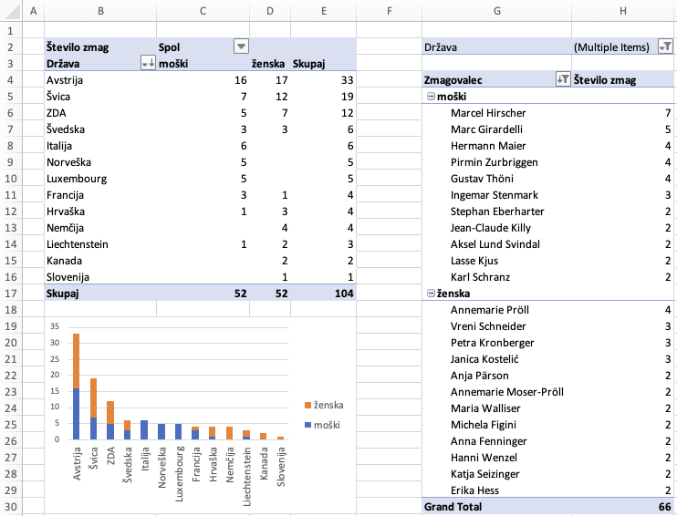
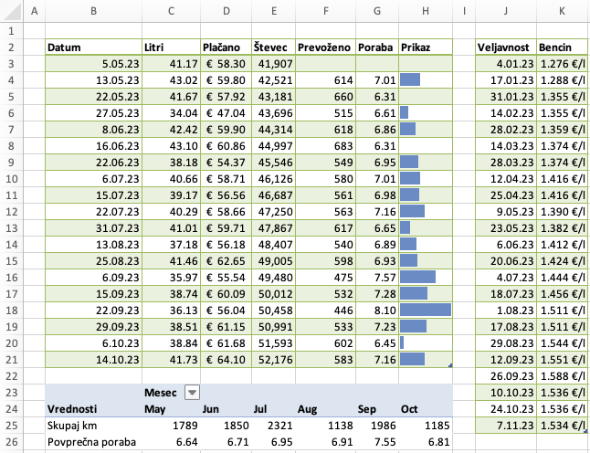
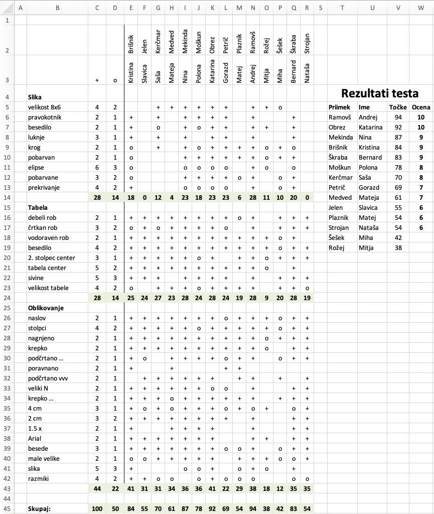

Razpredelnice#
Programska oprema
Ponavadi se izkaže, da ste se s programom Excel že kdaj prej spoznali, zato bomo pri vajah skočili na naprednejše teme. Predpostavljamo, da znate začetna poglavja vodiča po Excelu, do vključno poglavja o diagramih (“Charts”), od tega pri poglavju “Formulas & functions” le razdelek “Overview of formulas in Excel”; Še posebej pomembno je, da znate:
urejati stolpce, vrstice in liste zvezka, izbirati in premikati celice in razpone celic,
urejati tabele in diagrame,
narediti sklic na drugo celico ali razpon celic,
Kljub temu bomo na vajah nekaj pozornosti posvetili nekaterim pomembnim temam iz teh poglavij:
Datoteke z nalogami#
Za vajo lahko doma rešujete uvodne naloge iz Excela.
Datoteke za vaje najdete v arhivu
10-razpredelnice.zip.
Rezultati#
V zvezku rezultati.xlsx so zbrani rezultati testa, ki so ga študenti
pisali v treh skupinah.

Odstranite stolpec
Hin študente uredite naraščajoče po priimkih.V stolpcu
Fs funkcijoIFsestavite formulo, ki pove, ali ima študent vsaj \(50\) točk. V stolpcuIsestavite formulo, ki prešteje, koliko študentov je pisalo test v vsaki skupini (uporabiteCOUNTIF). V stolpcuJs funkcijoAVERAGEIFizračunajte povprečno število točk za vsako skupino. Rezultat naj bo izpisan na dve decimalki (ne zaokrožen).Tabelo podobno zgornji sestavite še z vrtilno tabelo. Prikažite udeležbo, povprečje, minimalno ter maksimalno število točk. Namig: polje Točke lahko v vrednostih vrtilne tabele uporabite več kot enkrat, z različnimi funkcijami združevanja.
Sestavite 3D tortni diagram z udeležbo po skupinah. Odmaknite največji kos in dodajte oznake z udeležbo. Sestavite stolpični diagram s povprečji točk po skupinah za leti 2021 in 2022. Popravite število decimalk na navpični osi, dodajte oznake osi in legendo.
Točke manjše od \(50\) s pogojnim oblikovanjem pobarvajte rdeče, prav tako pa tudi priimke in imena študentov, ki niso opravili testa. Namig: v meniju za pogojno oblikovanje poiščite New Rule in izberite slog Classic ter oblikovanje s formulo:
$E3<50.
Smučanje (vrtilna tabela)#
V datoteki smucanje.csv so zbrani podatki o skupnih zmagah v
svetovnem pokalu v alpskem smučanju. Podatki so ločeni z vejicami,
uporabljena je kodna tabela UTF-8. Podatke uvozite v delovni zvezek
smucanje.xlsx na list Podatki.
Tabelo z uvoženimi podatki poimenujte Zmagovalci.
Poglejte, kako se v Excelu naredi vrtilno tabelo.
Naredite nov list
Zmagena katerem sestavite vrtilno tabelo in diagram, kot je prikazano na sliki. Pri izbiri podatkov za vrtilno tabelo lahko napišete karPodatki!Zmagovalci.Prva vrtilna tabela naj vsebuje pregled zmag po državah in spolu tekmovalcev. Vrtilno tabelo poimenujte
PoDrzavah. Tabelo uredite padajoče po skupnem številu zmag.Druga vrtilna tabela naj prikazuje zmagovalce iz Evrope, ki so zmagali vsaj dvakrat. Ustrezen filter najdete v meniju, ki vam ga odpre gumb za filtriranje v glavi tabele. Izberite ustrezno polje in uredite filtriranje po vrednost. Te razdelite na moške in ženske kot prikazuje slika in tabelo uredite padajoče po skupnem številu zmag.

Poraba (MATCH in INDEX)#
V delovnem zvezku poraba.xlsx so vpisani podatki o tem, kdaj in
koliko goriva smo dotočili v avto. Predpostavite, da gorivo vedno
dotočimo do polnega.
Izračunajte prevožene kilometre (pri tem izpustite prvo vrstico). Gumbe v glavi tabele lahko skrijete na zavihku Table (možnost Filter Button).
S pomočjo funkcij
MATCHinINDEXizračunajte ceno natočenega goriva.Porabo (litre na 100 km) izračunate po formuli \(100 \cdot \frac{\text{litri}}{\text{prevoženo}}\).
V zadnjem stolpcu grafično prikaži porabo. S formulo kopirajte vrednost iz stolpca Poraba. Za zadnji stolpec uporabite pogojno oblikovanje: Conditional Formatting > Highest Value. Za minimum in maksimum iz menija izberite Lowest Value in Highest Value.
Sestavite vrtilno tabelo s pregledom prevoženih kilometrov in porabe po mesecih. Stolpec skupno lahko skrijete na zavihku Design.

Točkovanje (dodatna naloga)#
V delovnem zvezku tockovanje.xlsx so zbrani podatki o točkovanju
testa, ki so ga pisali študenti. Vsaka naloga je bila točkovana s
plusom, krogcem ali minusom (minusi v tabelo niso vpisani), vrednosti
plusa in krogca pa so različne pri posameznih nalogah.

Stolpce uredite tako, da bodo priimki študentov urejeni po abecednem vrstnem redu: Data > Sort, pod Options pa izberete Sort from left to right. Ni nujno, da se bodo šumniki uredili pravilno, to je za zdaj ok.
Na obarvanih poljih (vrstice 14, 24, 43 in 45), izračunajte dosežene točke s funkcijama
SUMinSUMIF. Formule najprej sestavite za enega študenta in jih kopirajte k drugim.Pod “Rezultati testa” kopirajte imena, priimke in dosežene točke (vrednosti, ne formul): uporabite menija Copy in Paste Special.
Študente uredite padajoče po doseženih točkah in izračunajte ocene.